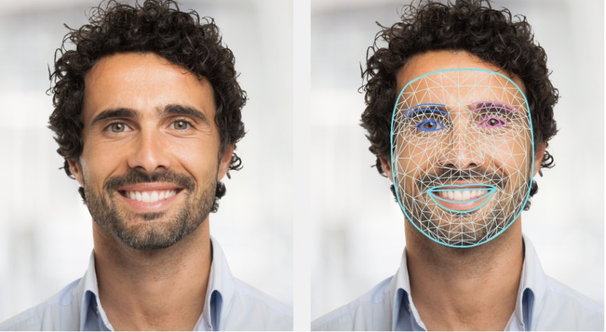

Abstract
Self-supervised speech models are a strong baseline for speech emotion recognition, but they still confuse emotions whose prosody is similar, such as happy and sad. We combine three speech models (wav2vec 2.0 frozen, wav2vec 2.0 with LoRA, and emotion2vec) with a facial-expression model built on MediaPipe blendshapes, using temperature-calibrated late fusion. On RAVDESS, with test actors unseen in training, fusion improves every speech model by 10.8 to 17.5 accuracy points. The best system, LoRA-adapted wav2vec 2.0 with the face model, reaches 86.7% on seven emotions, against 72.5% for speech and 65.0% for the face alone. The two modalities fail on different emotions, so each corrects the other.
Audio examples
Every RAVDESS actor reads the same two sentences in each emotion, so the words carry no information: the emotion has to be heard in the voice. These clips are two actors saying “Kids are talking by the door.”
| Emotion | Actor 01 | Actor 02 |
|---|---|---|
| Angry | ||
| Disgust | ||
| Fearful | ||
| Happy | ||
| Neutral | ||
| Sad | ||
| Surprised |
Clips from RAVDESS (Livingstone & Russo, 2018), CC BY-NC-SA 4.0. Strong intensity, except neutral, which RAVDESS records at normal intensity only.
Method
Two independent models, one per modality, each produce a score (logit) for every emotion. The speech branch is a self-supervised encoder with a small classifier head; the face branch summarises the 52 facial blendshapes from MediaPipe Face Landmarker over the clip and classifies them with an XGBoost random forest. Each branch’s logits are divided by a temperature fitted on the validation actors, so neither dominates by scale alone, and the two are summed:
- Data. The RAVDESS speech subset, split by actor: 16 for training, 4 for validation and 4 for testing (960 / 240 / 240 clips), so test voices and faces are unseen.
- Labels. Seven emotions: angry, disgust, fearful, happy, neutral, sad and surprised, with calm merged into neutral.
- Face features. Blendshapes keep facial-action intensities and drop background, lighting and appearance. Neural sequence models on them overfit in early tests, so each clip is summarised for a tree ensemble instead.

jawOpen or mouthSmileLeft. The face branch uses only these scores. Image: Google, MediaPipe documentation, CC BY 4.0.Results
| Model | Accuracy | Macro‑F1 |
|---|---|---|
| Speech only | ||
| wav2vec 2.0, frozen | 71.3% | 0.696 |
| wav2vec 2.0, LoRA | 72.5% | 0.702 |
| emotion2vec, frozen | 68.3% | 0.668 |
| Face only | ||
| Blendshapes + XGBoost RF | 65.0% | 0.650 |
| Speech + face | ||
| wav2vec 2.0, frozen + face | 82.1% | 0.813 |
| wav2vec 2.0, LoRA + face | 86.7% | 0.860 |
| emotion2vec, frozen + face | 85.8% | 0.854 |
Where the face model helps
Choose a speech model to compare it, emotion by emotion, with the face model and with the two fused.
Per-class precision, recall and F1 for this model
| Model | Normal | Strong |
|---|---|---|
| wav2vec 2.0, frozen | 64.1% | 79.5% |
| wav2vec 2.0, frozen + face | 74.2% | 91.1% |
| wav2vec 2.0, LoRA | 64.1% | 82.1% |
| wav2vec 2.0, LoRA + face | 83.6% | 90.2% |
| emotion2vec, frozen | 57.8% | 80.4% |
| emotion2vec, frozen + face | 82.0% | 90.2% |
| Face only | 64.1% | 66.1% |
Findings
- Frozen or LoRA wav2vec 2.0? LoRA, and the gap grows with fusion: 72.5% vs 71.3% alone, 86.7% vs 82.1% fused.
- Does emotion-specific pretraining win? No. emotion2vec, pretrained on emotional speech, scored 68.3% alone, below both wav2vec 2.0 pipelines.
- Does adding the face help? Yes, for every speech model (+10.8, +14.2 and +17.5 points). The face model is strong where speech is weak (happy, sad) and weak where speech is strong (neutral, surprised).
Limitations. Results come from one random seed and one actor split, without confidence intervals, so small gaps such as frozen vs LoRA alone may not hold up; repeated seeds and actor-wise cross-validation are the next step. RAVDESS emotions are acted by professionals and are clearer than everyday conversation.
Citation
@misc{candi2026hearing,
title = {Multimodal Speech Emotion Recognition with Late Fusion of
Self-Supervised Audio Models and Visual Blendshape Features on RAVDESS},
author = {Candi, Tharen Emmanuel},
year = {2026},
note = {Course project, University of Padova},
url = {https://tharencandi.net/fer-ser-fusion/}
}